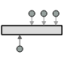

| fulcrum | PORTS_LIB.mech_rot | IN | |||
| load1 | PORTS_LIB.mech_trans | IN | |||
| load2 | PORTS_LIB.mech_trans | IN | |||
| load3 | PORTS_LIB.mech_trans | IN |
| I | REAL | 1 | Inertia of the lever | kg·m^2 | |
| L1 | REAL | 1 | Distance from load input 1 to fulcrum | m | |
| L2 | REAL | 0.5 | Distance from load input 2 to fulcrum | m | |
| L3 | REAL | 0.5 | Distance from load input 3 to fulcrum | m | |
| phi0 | REAL | 0 | Initial angular position | rad | |
| phi_max | REAL | 0.5 | Lever upper limit angular position | rad | |
| phi_min | REAL | -0.5 | Lever lower limit angular position | rad |
| phi | REAL | Lever angle | rad | ||
| s1 | REAL | Displacement of load 1 application point | m | ||
| s2 | REAL | Displacement of load 2 application point | m | ||
| s3 | REAL | Displacement of load 2 application point | m |
| arm1 | R_GearIdealR2T | |
| arm2 | R_GearIdealR2T | |
| arm3 | R_GearIdealR2T | |
| Inertia | R_Stop |
| Inertia.I | I | DATA | REAL | Moment of inertia of body | "kg·m^2" |
| Inertia.phi0 | phi0 | DATA | REAL | Initial angular position | "rad" |
| Inertia.phi_max | phi_max | DATA | REAL | Upper limit angular position | "rad" |
| Inertia.phi_min | phi_min | DATA | REAL | Lower limit angular position | "rad" |
| Inertia.w0 | 0 | DATA | REAL | Initial angular velocity | "rad/s" |
| arm1.ratio | 1 / L1 | DATA | REAL | Transmission ratio | "rad/m" |
| arm2.ratio | 1 / L2 | DATA | REAL | Transmission ratio | "rad/m" |
| arm3.ratio | 1 / L3 | DATA | REAL | Transmission ratio | "rad/m" |
Document generated automatically (Date: 2019:01:23, Time: 00:19:45)